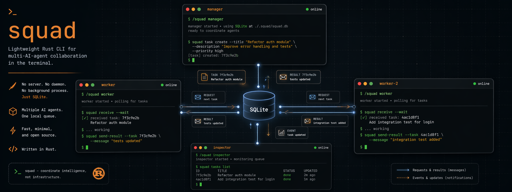

Multi-AI-agent collaboration
in the terminal.
A lightweight Rust CLI that lets Claude, Gemini, Codex, and OpenCode coordinate through a shared SQLite file. No server. No daemon. Just one slash command.

Most multi-agent systems demand a message broker, a runtime, an orchestrator. squad is six characters in your shell and a file on disk.
Every command is a one-shot read or write to a local SQLite file. Nothing runs in the background. Nothing to monitor.
Run /squad manager in any CLI. squad installs the slash command for every supported AI tool.
Create, ack, complete, requeue. Atomic ID auto-suffix means simultaneous joins never collide.
Three built-in roles. Add your own with a markdown file in .squad/roles/.
Written in Rust. A single static binary. Sub-millisecond send and receive.
Open .squad/messages.db in any SQLite client. That's the entire protocol.
Each agent runs in its own terminal. All inter-agent messages flow through .squad/messages.db. No network layer.
Terminal 1 (manager) Terminal 2 (worker) Terminal 3 (worker-2) ┌─────────────────────┐ ┌─────────────────────┐ ┌─────────────────────┐ │ /squad manager │ │ /squad worker │ │ /squad worker │ │ │ │ (auto-ID: worker) │ │ (auto-ID: worker-2) │ │ │ │ │ │ │ │ squad task create │─────>│ squad receive worker│ │ │ │ manager worker │ │ │ │ │ │ "task-a" │ │ │ │ │ │ │ │ │ │ │ │ squad task create │──────────────────────────────────>│ squad receive │ │ manager worker-2 │ │ │ │ │ │ "task-b" │ │ │ │ │ │ │ │ │ │ │ │ squad receive │<─────│ squad task complete │ │ │ │ manager │ │ worker <task-id> │ │ │ │ │ │ "done A" │ │ │ │ │ │ │ │ │ │ │<──────────────────────────────────│ squad task complete │ │ │ │ │ │ worker-2 <task-id>│ │ │ │ │ │ "done B" │ └─────────────────────┘ └─────────────────────┘ └─────────────────────┘ │ ▼ .squad/messages.db
One squad setup installs the slash command into all detected tools.
squad setup auto-detects Claude, Gemini, Codex, and OpenCode. squad init initializes the workspace.worker, worker-2…)..squad/, update .gitignore, append squad guidance to CLAUDE.md / AGENTS.md / GEMINI.md./squad slash command for all detected AI tools, or a specific one.--json exposes capability metadata.@all to broadcast.--wait blocks until a message arrives.